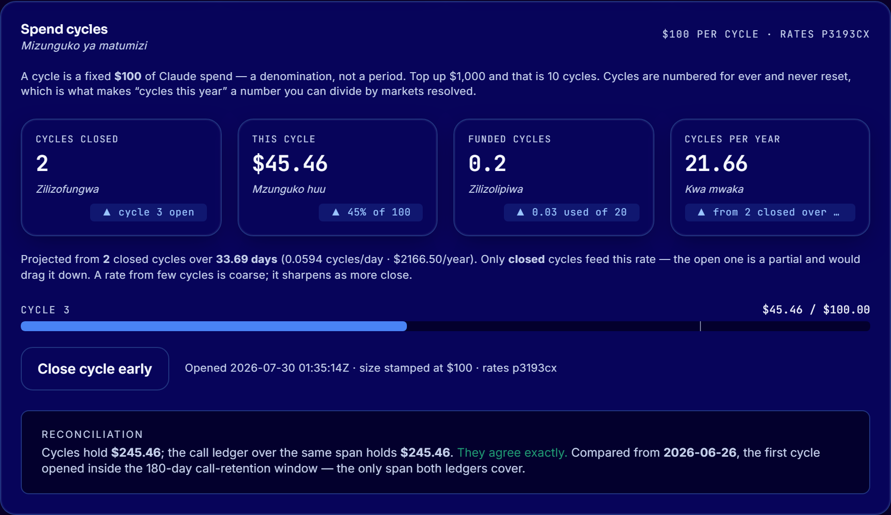
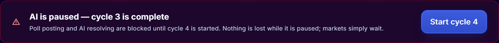
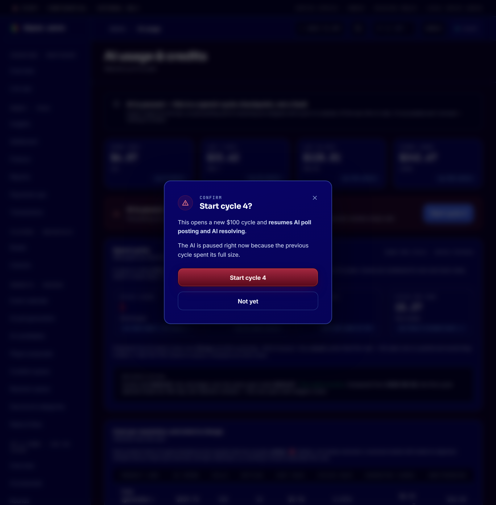
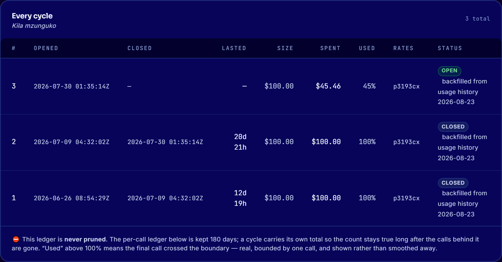
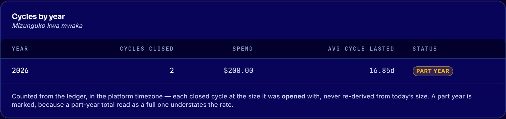
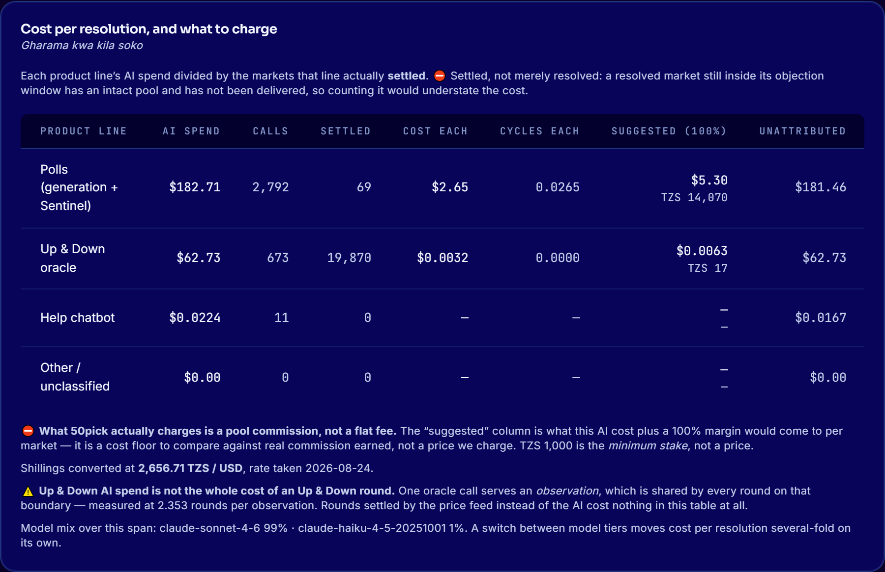
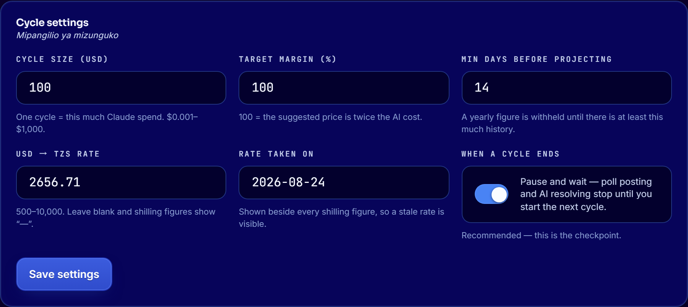

For 50pick staff who run the platform. No technical knowledge required. Everything here lives on one screen: Admin → AI usage.
50pick pays Anthropic for every AI call it makes — writing polls, resolving markets, answering the help chatbot. A cycle is simply a fixed amount of that spend, so it can be counted.
Top up $1,000 and that is 10 cycles. Top up $10,000 and that is 100 cycles. The size is a setting — you can change it — but $100 is what 50pick uses today.
A cycle is an amount, not a length of time. It does not end on a Monday or at month end. It ends when $100 has been spent — which might take two weeks or two months, depending on how busy the platform is. How long each one lasted is recorded, so you can see that pattern.

| Figure | What it means |
|---|---|
| Cycles closed | How many complete $100 cycles the platform has spent since it started. An exact count — not an estimate. |
| This cycle | How much of the current $100 has gone. The bar underneath shows the same thing. At 100% it closes and the AI pauses. |
| Funded cycles | How many cycles your Anthropic credit limit will pay for. If this is below 1, your credit limit is smaller than one cycle — see Before you press Start. |
| Cycles per year | The projected annual rate. Withheld until there is enough history — if it says “not enough data”, that is the platform refusing to guess. |
It compares the cycle ledger against the record of individual API calls. It should say “They agree exactly.” If it ever reports a difference, the figures on this page should not be used for pricing until someone has looked into it.
When the current cycle reaches $100 it closes, and AI poll posting and AI market resolving stop. A red bar appears at the top of the page:


1 · Is there still credit at Anthropic? A cycle is 50pick's own checkpoint. It does not know your Anthropic balance. If the balance is empty, starting a cycle will not help — top up first, then use New top-up window in the Credit budget panel below.
2 · Does the spend look normal? Compare how long this cycle lasted against the ones before it in Every cycle. A cycle that finished far quicker than usual is worth a question before you commit the next $100.
The Close cycle early button ends the current cycle before it reaches $100 — useful for closing the books at the end of a month. It also pauses the AI, exactly as a natural ending does, and you then start the next one as normal.
⚠️ Closing early records a short cycle in the ledger. That is fine and it is honest — the yearly projection is worked out from spend, not from how many cycles are in the list, so closing early does not distort it.

In the picture above, cycle 1 lasted 12d 19h and cycle 2 lasted 20d 21h. That is the platform's real burn rate: about $100 every two and a half weeks, so a $1,000 top-up would last roughly five and a half months.
CORRECTED 2026-08-24. This paragraph said “24 days and 25 days … roughly $100 every three and a half weeks … about eight months”. Those were the numbers in the SEEDED database the original screenshot was taken against, not the ones on the platform — and the session that wrote them had already measured the real pair (12.82 and 20.88 days) in its own handoff the same day. The picture beside this text now comes from production, so the two agree: the console’s own Cycles by year panel reads 21.66, which is 16.9 days a cycle and $2,166 a year — a $1,000 top-up is 168 days, not eight months. ⛔ An admin planning a budget from the old sentence would have over-estimated the runway by about 45%.


| Column | What it means |
|---|---|
| Settled | Markets that finished and paid out. A market that has a verdict but is still inside its objection window is not counted — it has not been delivered yet. |
| Cost each | The AI cost of one settled market on that line. |
| Suggested | That cost plus the margin setting. This is a cost floor for comparison, not a price 50pick charges. |
| Unattributed | Spend on that line that could not be tied to one specific market — mostly writing polls that were never published. Shown rather than hidden, because leaving it out would make the product look cheaper than it is. |
TZS 1,000 is the minimum stake a player can place. It is not a price we charge per market. The “Suggested” column is there to be compared against the commission a market actually earns — never to be quoted to anyone as a price.
The Up & Down line is history. Up & Down stopped using AI to read prices on 3 August 2026 — it uses a price feed now. Its figure describes a period that has ended.
Shillings need a rate. Every TZS figure shows “—” until someone enters the USD→TZS rate and the date it was taken. There is deliberately no default: a converted figure with no rate behind it is a number nobody can check.

| Setting | What it does |
|---|---|
| Cycle size | The amount one cycle represents. Not retroactive — cycles already closed keep the size they were opened with, so past counts never move. The new size applies to the next cycle opened. |
| Target margin | Added to the AI cost to produce the “Suggested” column. 100% means the suggested figure is twice the cost. |
| Min days before projecting | How much history is needed before a yearly figure is shown at all. Below this, the platform says so instead of guessing. |
| USD → TZS rate + date | Needed before any shilling figure appears. The rate and its date are printed next to every converted figure, and a rate over 30 days old is flagged. |
| When a cycle ends | Leave this on Pause and wait. Turning it off means the AI never stops — the checkpoint disappears. |
These are easy to confuse and they are not the same. Both appear on the AI usage page.
| Spend cycle | Top-up window | |
|---|---|---|
| What it is | An amount — $100 of spend | A period — since you last bought Anthropic credit |
| Where | The Spend cycles panel | The Credit budget panel |
| What ends it | Spending $100 | You, after topping up |
| Numbering | Never resets — cycle 7 stays cycle 7 | Has no number; it just restarts |
| The button | Start cycle N | New top-up window |
Put simply: the top-up window is how much credit you have bought. The cycle is the $100 unit that credit is counted in. Starting a new top-up window does not touch the cycles, and starting a cycle does not add credit.
Never turn off “Pause and wait” without a decision from Ali — it removes the checkpoint entirely.
Never quote the “Suggested” column as a price. It is a cost floor for internal comparison.
Never read a figure that says “—” as zero. It means the platform does not have what it needs to answer honestly — usually a missing exchange rate or too little history.